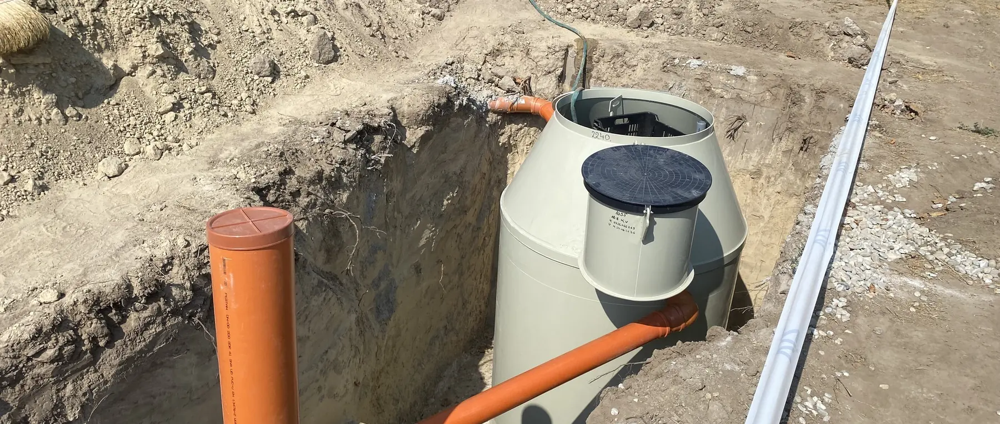

Nagyobb és közösségi rendszerek
Nem egy családi berendezés nagyobb változata. Terhelési, technológiai, üzemeltetési és engedélyezési szempontból önálló projektkategória — más tervezési úttal.

Az alapállítás
Nem egy nagyobb családi berendezés
A nagyobb szennyvíztisztító projekt nem egy családi berendezés nagyobb változata. Terhelési, technológiai, üzemeltetési és engedélyezési szempontból önálló projektkategória, más tervezési úttal és más felelősségi rendszerrel.
A leggyakoribb hiba az, hogy a projekt lakossági logikával indul el: megkérdezik, hány fő, kiválasztanak egy méretet, és a monitoring, az előkezelés meg az üzemeltetés csak a végén kerül elő. Nagyobb rendszernél ezek nem részletkérdések — a projekt szerkezetét határozzák meg.
Ez a szakasz ezért nem terméket ajánl, hanem kategorizál: standardizálható kommunális terhelésű, moduláris közösségi vagy teljesen egyedi mérnöki rendszerről van-e szó.
Három fogalom
Amit nem szabad összevonni
LE — lakosegyenérték
- A biológiailag bontható SZERVES terhelés egysége
- 1 LE = napi 60 g BOI5
- Ez határozza meg a jogi kategóriát is (1–50 LE)
- Laborvizsgálattal mérhető
- NEM azonos a napi vízmennyiséggel
m³/nap és „fő”
- m³/nap = HIDRAULIKAI terhelés, a beérkező vízmennyiség
- A vízóráról leolvasható, meglévő létesítménynél mért adat
- „Fő” = használati közelítő adat, nem méretezési egység
- Intézménynél és üzemnél a fő különösen félrevezető
- A három adatot külön kell megadni
Egy korrekció
Az „1 LE = 135 liter/fő/nap” állítás téves
A korábbi tájékoztatásunk egy helyen úgy fogalmazott, hogy 1 lakosegyenérték napi 135 liter/fő vízfogyasztást jelent. Ezt pontosítjuk: a lakosegyenérték szervesanyag-terhelési egység, nem vízmennyiség.
A 135 liter/fő/nap érték legfeljebb saját hidraulikai tervezési alapértékként maradhat meg — ha a műszaki csapat továbbra is ezzel számol és dokumentálni tudja. De a két fogalmat terminológiailag szét kell választani.
Nagyobb projektnél ez nem szőrszálhasogatás: egy nagykonyhás intézmény vízfogyasztása és szerves terhelése egészen máshogy arányulnak egymáshoz, mint egy lakóépületé.
A szakasz oldalai
Hol tart a projektben?
A sorrend a projekt logikáját követi: kategória, terhelés, technológia, majd az üzemeltetés és az engedélyezés.
-
Megoldások áttekintése
Moduláris, tartályos, konténeres vagy egyedi mérnöki rendszer — melyik irányt érdemes először megnézni.
Áttekintés -
Kapacitási és projektkategóriák
A jogi, a műszaki és a kereskedelmi kategória nem ugyanaz. Hol húzódnak a határok — és hol van rés.
Kategóriák -
Terhelési profil
A névleges létszámból méretezhető adatsor: átlag, csúcs, szezonalitás, szennyvízjelleg.
Terhelési profil -
Előkezelés és kiegészítők
A biológiai reaktor csak egy elem. Zsírfogó, kiegyenlítés, átemelő, tisztítottvíz-tartály — mikor melyik.
Előkezelés -
Monitoring és üzemeltetés
Az átadás nem a projekt vége. Üzemnapló, mintavétel, riasztás, szerviz — és ki a felelős üzemeltető.
Üzemeltetés -
Engedélyezés
Az út a kapacitástól, a szennyvíz eredetétől és a befogadótól függ. Nincs egyetlen lépéssor.
Engedélyezés -
Intézményi esettanulmányok
Működő közösségi és intézményi rendszerek — terheléssel, monitoringgal, üzemeltetési modellel.
Esettanulmányok -
Szakmai konzultáció
Nem ajánlatkérő űrlap: strukturált projektbrief, kategóriával, hiánylistával és napirenddel.
Konzultáció
Amit ez a szakasz nem tesz
Nem ad automatikus termékjavaslatot és nem ad árat. Nagyobb rendszernél a kapacitás vagy a személyszám alapján közölt ár különösen félrevezető lenne: a projektköltséget a rendszerarchitektúra, az előkezelés, a földmunka, a vezérlés és monitoring, a vízelhelyezés, a tervezés és az üzemeltetés együtt határozza meg.
És nem ígér engedélyezhetőséget. Az engedélyezési út projektfüggő, a hatósági rendszer pedig időről időre változik — ezt aktuális forrásból kell ellenőrizni, nem egy weboldalról.
Gyakori kérdések
Amit a leggyakrabban kérdeznek
50 fő fölött mi változik?
A 147/2010. Korm. rendelet szerinti egyedi szennyvíztisztítás kategóriája 1–50 LE terhelésig terjed. E fölött a projekt más szabályozási és engedélyezési úton halad, a méretezés jogosult tervező feladata lesz, és a monitoring meg az üzemeltetési felelősség is más szinten jelenik meg.
Több kisebb berendezés vagy egy nagy?
Mindkettő létező út, és a választás projektfüggő. A moduláris kialakítás fokozatos kapacitásépítést és leválasztható egységeket tesz lehetővé; a célzott nagytelep egységesebb technológiai és vezérlési rendszerként tervezhető. Az áttekintő oldal ezt veszi végig.
Vágóhídi vagy tejüzemi szennyvíz kezelhető?
Speciális terhelések egyedi mérnöki vizsgálat alapján kezelhetők. Ez nem automatikus alkalmasság: mintavétel, laboradat és megvalósíthatósági vizsgálat előzi meg. Egy standard telep nem alkalmas automatikusan bármilyen ipari szennyvízre.
Ki fogja üzemeltetni?
Ezt az ajánlat előtt kell tisztázni, nem az átadáskor. Nagyobb rendszernél nevesített felelős üzemeltető, rendszeres ellenőrzés, üzemnapló és jellemzően mintavétel is szükséges.